A ostra é consumida desde os primórdios da humanidade. Na verdade, elas já existiam no Período Triássico, o primeiro período da Era Mesozóica, junto com os ancestrais dos dinossauros. Algum tempo depois, a ostra se tornou um ingrediente comum nas refeições dos homens pré-históricos que a cozinhavam sobre pedras quentes ou direto no fogo. Na Roma Antiga, elas faziam sucesso temperadas com pimenta, levístico, vinagre, garum, azeite e vinho e eram indicadas para uma série de doenças como indigestão, úlcera e anemia. Com o fim do Império Romano no século V, o consumo de ostras caiu e muitas fazendas foram abandonadas, fazendo com que o molusco saísse dos menus por alguns bons séculos...São conhecidas pela sua utilização na alimentação e pela capacidade de produzir pérolas. As ostras são moluscos filtradores e bioacumuladores, o que significa que podem acumular substâncias tóxicas presentes na água onde vivem.
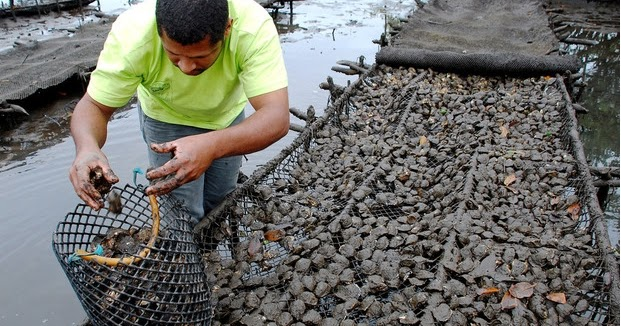
As ostras podem ser encontradas em todos os mares do mundo, menos em águas muito frias e/ou poluídas. No início, estes moluscos vivem soltos nas águas e na areia e com o passar do tempo fixam-se nas rochas. Seus principais predadores são, além do homem, diversas espécies de peixes, a estrela do mar, caranguejos e outros tipos de moluscos. Hoje, os maiores produtores de ostras são: Portugal, Itália, França, Inglaterra, Holanda e Bélgica.
Ostras podem ser consumidas nas conchas, cruas, defumadas, cozidas, assadas, fritas, estufadas, enlatadas, em conserva, cozidas no vapor ou gratinadas, ou ainda utilizadas em diversas bebidas. Podem ser comidas simplesmente ao abrir a concha e consumir o interior, incluindo o suco. Frequentemente adiciona-se manteiga e sal. Ostras pochê gratinadas podem ser servidas sobre torradas com roux de creme. No caso das ostras Rockefeller, o preparo pode ser bastante complexo. Às vezes, são servidas sobre algas comestíveis, como algas marrons.
Horário e Localização
A Ostra Bêbada está localizado na Rua Benjamin Constant, 89, Paranaguá, e funciona de quarta a domingo, das 8h às 23h.
A partir das 11h, são servidos pratos feitos e caranguejo durante todo o dia.
BARREADO
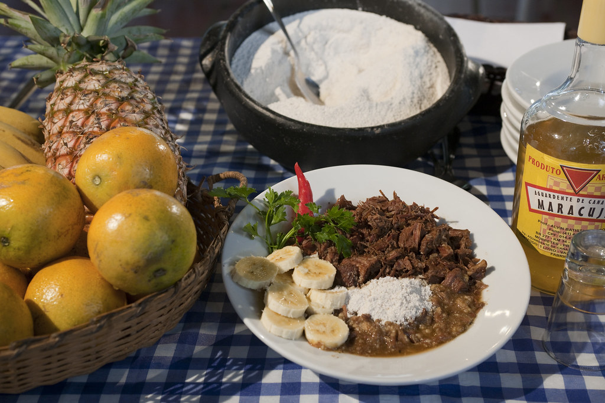
Sua origem é açoriana de um ritual de mais de 300 anos ainda seguido no preparo do prato. A origem é atribuída aos portugueses que vieram para o litoral do Paraná no século XVIII. Os registros antigos indicam a vila de Guaraqueçaba como a disseminadora da receita. O tempero do prato seguiu junto com outras manifestações culturais para o continente, entre elas o fandango, dança de tamancos ao som da rabeca, trazidos pelos açorianos e que são típicos da cultura caiçara.
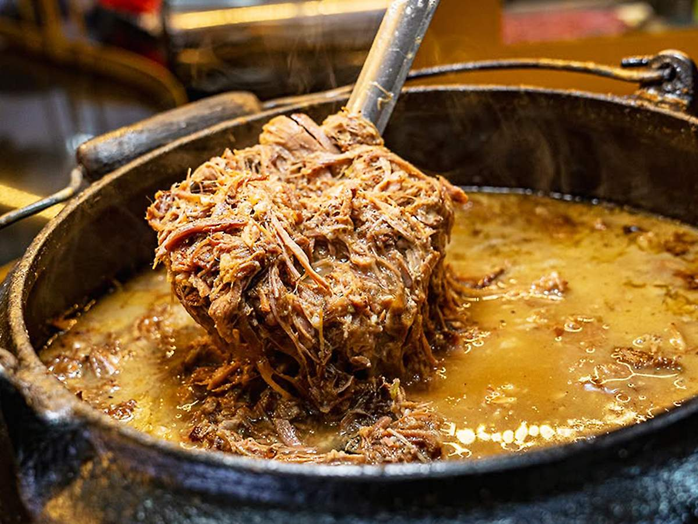
O costume de cozinhar a carne bovina foi levado ao litoral do Paraná pelos primeiros portugueses que chegaram na região. Os portugueses realizavam os mutirões, que na linguagem indígena era denomina de "pixirum", que significa "fazer tudo em conjunto". A população local, formada por portugueses, caboclos e indígenas, se reuniam, por exemplo, em colheitas e construções de igrejas e escolas. Nessas mutirões sempre serviam cachaça e refeições com bastante sustâncias, como a carne barreada, que era considerada simples e de fácil preparado, podendo ainda ser requentada diversas vezes no fogo a lenha.
CASA DO BARREADO
A Casa do Barreado oferece uma experiência gastronômica memorável em um ambiente acolhedor e caseiro. Especializada em barreado, a chef Norma prepara pratos deliciosos, além de opções de frutos do mar. O atendimento atencioso e as sobremesas caseiras são destaques, proporcionando uma refeição completa e saborosa. O ambiente amplo e verde, juntamente com a hospitalidade da equipe, faz com que os visitantes se sintam em casa. Com reservas antecipadas durante a semana e atendimento ao público aos fins de semana, a Casa do Barreado é uma parada obrigatória para quem busca a verdadeira culinária do litoral.
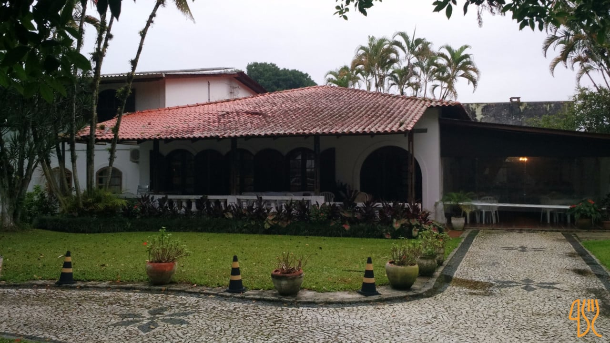
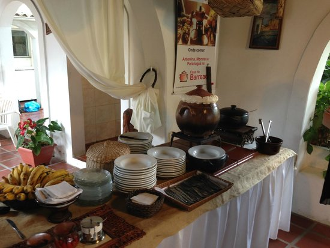
Horário e Localização
Rua José Antônio da Cruz, 78 Ponta do Caju, Paranaguá, Paraná Brasil.
Funcionamento de Sábado e Domingo das 12h à 15H
ARROZ LAMBE-LAMBE
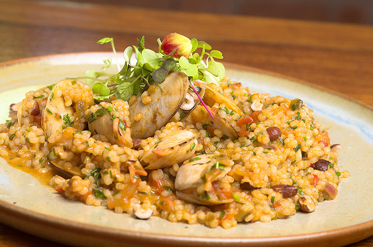
Trata-se de um prato típico simples e delicioso, feito apenas com marisco, arroz e temperos. É uma comida típica de áreas litorâneas onde é abundante a presença do marisco, (também chamado de mexilhão em algumas partes do Brasil).
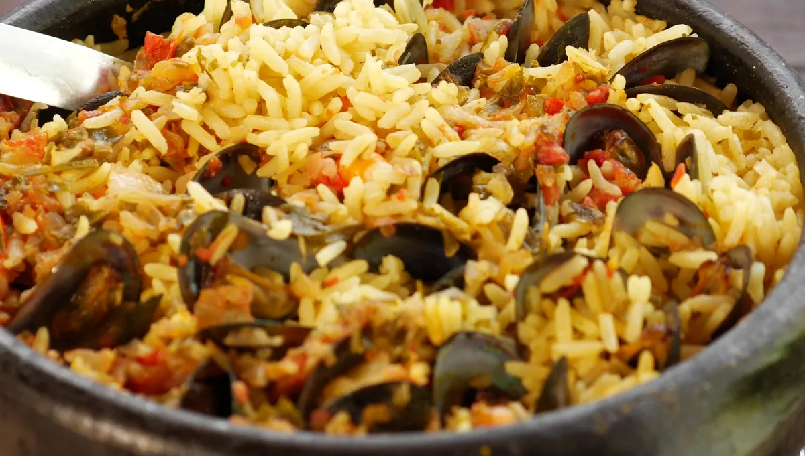
E nem precisa de talheres para comer. No Lambe Lambe o arroz é bem temperado e cozido com o marisco ainda na casca. Durante o cozimento, os mariscos vão se abrindo e soltando todo o seu sabor. Já o arroz, por sua vez, invade e preenche as conchas.
Originalmente se comia com as mãos, utilizando a própria concha e no final sempre se lambia a concha. Daí vem o nome do prato.
DANÚBIO AZUL
O Restaurante Danúbio Azul em Paranaguá, Paraná, é uma instituição com mais de 70 anos de história na cidade. Fundado em 1954, foi adquirido pela família Carmezin em 1963 e atualmente é o restaurante mais antigo em funcionamento na região. O restaurante é conhecido por sua especialidade em frutos do mar e pela tradicional cozinha internacional, com opções à la carte, buffet livre ou por quilo.
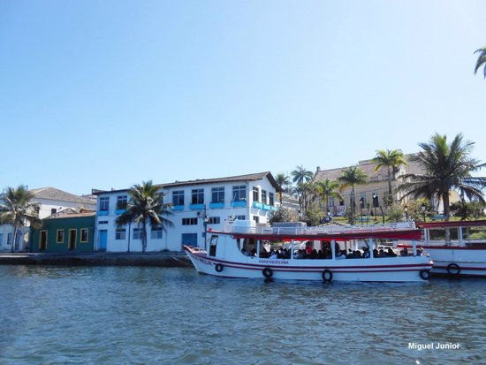
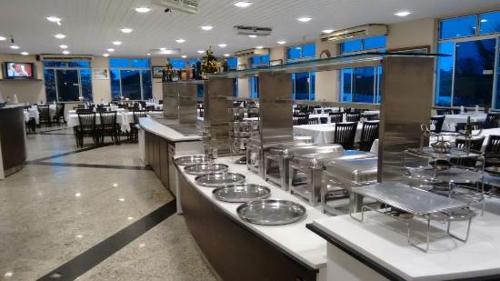
Horário e Localização
Rua Xv de Novembro, 95 Centro Histórico, Paranaguá, Paraná
De segunda à sábado das 11:00H à 15:00H/19:00 à 00:00H
Domingo das 11:00H à 16:00H
TAINHA-ASSADA
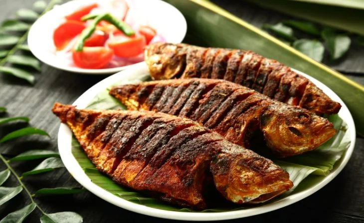
A origem da pesca da tainha no Brasil está intimamente ligada à história dos povos indígenas, que praticavam essa pesca desde muito antes da chegada dos colonizadores europeus. As comunidades indígenas, especialmente as de origem tupi, que habitavam o litoral desde o norte de São Paulo até Cabo Frio, no Rio de Janeiro, dependiam da tainha como fonte de alimento e a pescavam de forma artesanal.
Com o tempo, a pesca da tainha tornou-se uma tradição cultural e econômica, sendo praticada por pescadores e comunidades costeiras de diferentes regiões do Brasil.
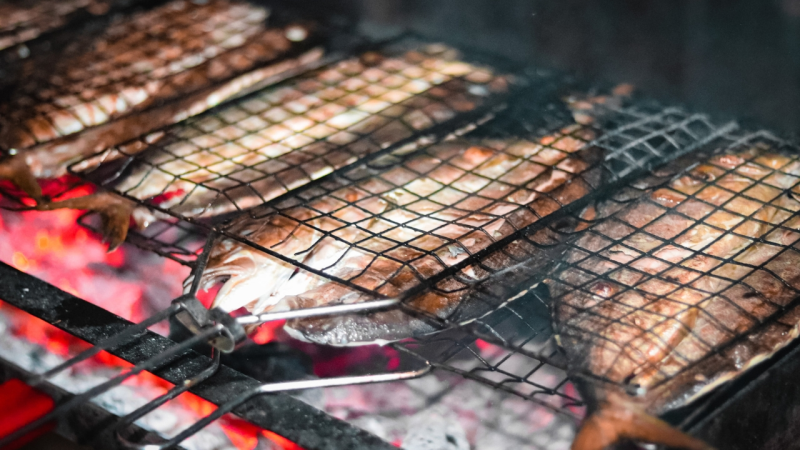
A chegada dos colonizadores açorianos, por exemplo, trouxe técnicas e conhecimentos marítimos que foram incorporados à prática da pesca da tainha em Santa Catarina. A pesca da tainha é um exemplo de como a tradição indígena se mantém viva e se adapta a diferentes contextos históricos e sociais. É uma atividade que une comunidades, preserva conhecimentos ancestrais e contribui para a identidade cultural de diversas regiões costeiras. A pesca da tainha é uma expressão de resiliência e orgulho para as comunidades pesqueiras, que continuam a praticá-la e a transmitir os seus conhecimentos para as próximas gerações.
RESTAURANTE ORLAS
O Mercado Municipal de Paranaguá é um lugar movimentado e animado, onde o visitante pode encontrar produtos locais, incluindo frutos do mar frescos, artesanato e souvenirs. Também é possível fazer degustação de bebidas e comidas regionais.
Em Paranaguá, as "orlas" referem-se ao espaço costeiro e às áreas próximas à água, incluindo praias, calçadas e áreas de lazer. No contexto comercial, a região da orla geralmente oferece uma variedade de opções, como:
Comida local, frutos do mar, petiscos e bebidas, vista para o mar.
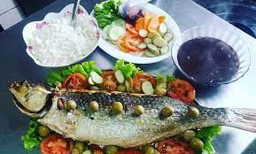
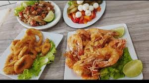